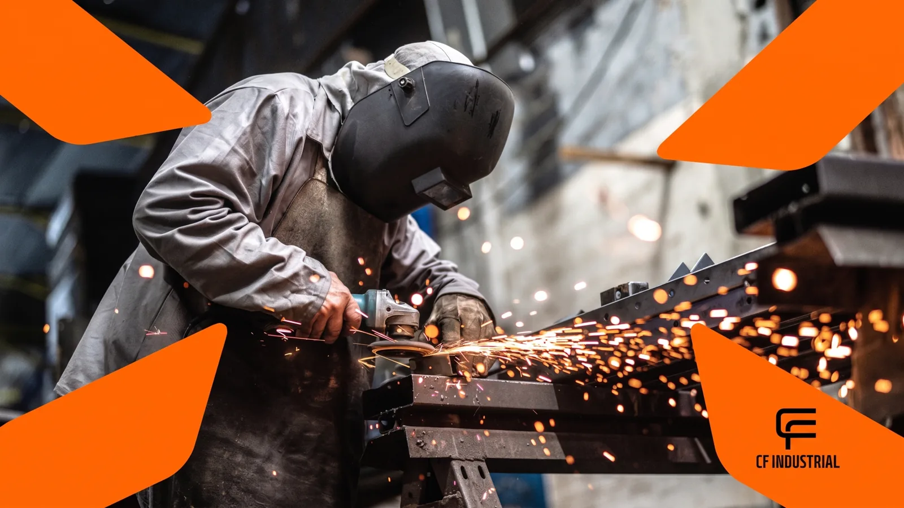

01
Metal laser cutting
Sheet metal and component cutting for industrial projects, maintenance, machine manufacturing, metalwork, construction and parts made to drawing.
Open service page
Laser cutting, machining, turning, milling, welding, 3D printing, tooling and other processes selected for each project's needs.
Sheet metal and component cutting for industrial projects, maintenance, machine manufacturing, metalwork, construction and parts made to drawing.
Open service pageLaser cutting and engraving for MDF, wood, acrylic and compatible materials, for signage, woodworking, architecture, prototyping and small batches.
Open service pageManufacturing and reconditioning components from drawings, samples or maintenance needs, with integration into other CF Industrial processes.
Open service pageA process suited to rotational components, custom manufacturing, replacement parts and maintenance.
Open service pageMilling of surfaces, slots, housings, contours and geometries needed to manufacture and recondition components.
Open service pageWelding for joining, assembly, reinforcement and repair of components, integrated with cutting, machining and custom manufacturing where appropriate.
Open service page3D printing can speed up validation, support tool development, produce jigs and enable application-specific parts.
Open service pageDevelopment and manufacturing of solutions for assembly, inspection, testing, maintenance, positioning and other process-specific needs.
Open service pageCutting, machining, welding, 3D printing and fixture development can complement each other. The choice depends on material, geometry, quantity, function and deadline.
If you are unsure which process you need, send the application, photos, dimensions and objective. Technical assessment will help guide the project.
Request an assessmentDevelopment of parts, tooling and fixtures that combine CF Industrial processes for each application.
Defining material, geometry and process to manufacture or recondition industrial components.
Solutions for assembly, positioning, inspection, testing and maintenance.
Cutting, machining, welding and 3D printing combined to meet project requirements.
Send your project details and CF Industrial will assess the most suitable process for your needs.